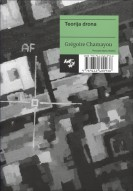
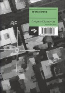

| Knjiga | Avtor | Založba, leto izdajec | Oglas | Cena |
| Kako do prvih mest na Googlu |
Tomaz Gorec | Spletni partner, 2018 | Bi želeli, da se vaša spletna stran pojavlja na prvih zadetkih v Googlu? Bi želeli prodati več svojih izdelkov in storitev ter povečati prepoznavnost vašega podjetja in vaših blagovnih znamk? V knjigi boste izvedeli vse informacije o tem, kako priti med prve zadetke na Googlu.več> | 41,00 € |
| Teorija drona  |
Grégoire Chamayou | Krtina, 2016 | Chamayou izhaja iz metodološkega vodila, da razvoj tehnologije ne prinaša samo razširitve nabora sredstev za dane smotre, temveč spreminja način njihove uporabe in preko tega določa same smotre. Vsaka tehnika nosi s seboj neko filozofijo, ki nazadnje vpliva na vsakdanje življenje uporabnikov. V tej luči Chamayou analizira pojav dronov, predvsem oboroženih daljinsko vodenih letal, katerih uporaba je v zahodnih vojskah vedno večja.več> | 22,00 € |
| Neuradni Pokemon Go vodnik po terenu |
Ivy St. Ive | Ucila International, 2016 | MILIJONI LJUDI so sprejeli izziv Pokemon Go, da bi postali največji trener vseh časov. Ker toliko ljubiteljev lovi pokemone in se z njimi bojuje, je bilo nemogoče najti prednost pred konkurenco – do zdaj. V tem vodiču so vsi nasveti, zvijače, strategije in bližnjice, ki jih potrebujete, da postanete legenda. več> | 12,99 € |
| Osnove programiranja |
Max Wainewright | Ucila International, 2016 | S temi osnovnimi navodili o kodiranju se pouči o ZANKAH, SPREMENLJIVKAH in IZBIRI – razvij svoje programerske veščine do te mere, da boš izdelal spletno stran … in še več! Na poti boš srečal ROBOTE POMAGAČE, ki bodo poskrbeli, da ti bo vse jasno. Nauči se uporabljati logo, ustvarjaj igre v scratchu, programiraj v pythonu, delaj poskuse s HTML-jem in z javascriptom izdelaj interaktivne spletne strani.več> | 12,99 € |
| Hekerski manifest |
McKenzie Wark | Maska, zavod za založniško dejavnost, 2008 | Svoj čas, ko sem še kot Lekov »area sales manager« hodil po državah Daljnega vzhoda in tam prodajal takrat vroče blago v podobi klavulanske kisline, ki antibiotiku amoksicilinu izboljša delovanje, sem se po azijskih koncih srečeval z različnimi ljudmi. V Indiji sem bil tako nekoč povabljen k poslovnemu partnerju, sicer podjetniku in kar spodobno velikemu kapitalistu s precejšnjo farmacevtsko tovarno, ki je bil poleg tega tudi univerzitetni profesor.več> | 15,00 € |
| |
||||